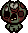
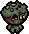
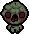
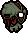

Gapers walk towards Isaac by the most direct route possible. They will actively path around obstacles and other enemies that block their path to Isaac. Upon death, they will usually transform into a Pacer or with a slightly lower chance a Gusher.
Variations
Frowning Gaper
Frowning Gapers walk slowly toward Isaac (though faster than Gapers) and deal contact damage. They start out with their eyes closed, and when they have line of sight with Isaac, they will open their eyes and gain extra permanent speed. Upon death, they will usually transform into a Pacer or Gusher.
Flaming Gaper
Flaming Gapers walk slowly toward Isaac (slightly faster than Gapers) and deal contact damage. Upon death, they will usually transform into a Pacer or Gusher.
Notes
- Unlike other flaming enemies, they are not immune to damage from fire sources and regular Gapers will not turn into Flaming Gapers upon contact with any source of fire.
Nulls
Nulls walk slowly toward Isaac (similarly to Frowning Gapers) and deal contact damage. They start out with their eyes closed, and when they have line of sight with Isaac, they will open their eyes, though without a speed increase. They periodically fade into and out of visibility.
Notes
- White Champion Nulls may not be able to turn invisible while invincible.
- They are referred to as "Nulls", which goes both for its singular and plural usage.
 The health bar that
The health bar that  Spider Mod adds to enemies will not appear under a Nulls while it is invisible.
Spider Mod adds to enemies will not appear under a Nulls while it is invisible.
Cyclopia
Cyclopias walk toward Isaac (slightly slower than Gapers), dealing contact damage and leaving behind a short-lasting trail of damaging Red Creep. Occasionally shoots a blood shot towards Isaac.
Gurgle
Gurgles walk towards Isaac (significantly faster than Gapers), dealing contact damage and periodically firing  Ipecac shots at him. These shots can kill other enemies caught in their blast radius, but Gurgles themselves are immune to their own shots as well as Ipecac shots, bombs, and
Ipecac shots at him. These shots can kill other enemies caught in their blast radius, but Gurgles themselves are immune to their own shots as well as Ipecac shots, bombs, and  fireballs from other monsters. They can turn into a Splasher upon death.
fireballs from other monsters. They can turn into a Splasher upon death.
Crackle
Crackles walk towards Isaac at the same speed as a Gurgle, dealing contact damage and periodically shooting a fireball which releases 4 lines of fire in the cardinal directions when it touches the ground. These lines of fire span the length and height of a normal sized room. Like the Gurgle, they are immune to fireballs, Ipecac shots, and bombs from other monsters.
Blue Gaper
Blue Gapers walk towards Isaac slightly faster than Gapers, and deal contact damage. They are mainly spawned by  Hush.
Hush.
Notes
- They can rarely appear in
 Dirty Bedrooms and
Dirty Bedrooms and  I AM ERROR rooms.
I AM ERROR rooms.  They can rarely appear in a closet on most floors before Chapter 4.
They can rarely appear in a closet on most floors before Chapter 4. Blue Gapers can also be found in the unique rooms created by
Blue Gapers can also be found in the unique rooms created by  Blue Key and in Red Rooms created on
Blue Key and in Red Rooms created on  ???.
???.
Greed Gaper
Greed Gapers walk toward Isaac, dealing contact damage. They are mainly spawned during the Ultra Greed boss fight.
 If they deal contact damage to Isaac, they will force Isaac to drop or lose some coins, similar to Keepers.
If they deal contact damage to Isaac, they will force Isaac to drop or lose some coins, similar to Keepers.
Notes
- They have 4 different appearances, though this is purely cosmetic.
- 2 Greed Gapers may rarely replace the Shopkeeper in
 Shops.
Shops.  2-4 Greed Gapers have a chance to appear in
2-4 Greed Gapers have a chance to appear in  Treasure Rooms.
Treasure Rooms.- Greed Gapers no longer appear in Treasure Rooms; layouts that used to contain them now contain
 Bulbs. They can, however, appear in Ultra Secret Rooms.
Bulbs. They can, however, appear in Ultra Secret Rooms.
Deep Gaper
Deep Gapers are initially hidden and emerge from the floor once all initial enemies in the room have been killed. Deep Gapers walk towards Isaac slightly faster than Gapers after emerging and deal contact damage.
Notes
- This enemy has 14 design variants, 7 for
 Downpour and 7 for
Downpour and 7 for  Dross. These variants are purely cosmetic with the exception of one that has a Small Leech stuck to its head, which will detach from it and chase Isaac when the Deep Gaper is killed.
Dross. These variants are purely cosmetic with the exception of one that has a Small Leech stuck to its head, which will detach from it and chase Isaac when the Deep Gaper is killed.
Blurb
Blurbs walk slowly towards Isaac, dealing contact damage. After taking some damage or getting close to Isaac, they fire a chaotic burst of tears at him and chases Isaac at the speed of Frowning Gapers, attempting to deal contact damage. They have a high chance to turn into Pacers or Gushers upon death.
They will still spit out their projectiles if killed in an instant with high damage, firing towards Isaac even if he is not within targeting range.
Wraith
Wraiths walk towards Isaac slightly faster than Gapers, dealing contact damage. They are invisible and can only be seen through the reflection they cast in the water, or the ripples they make as they walk. The occasional lightning strikes in  Downpour will also make them briefly visible.
Downpour will also make them briefly visible.
Notes
- They are visible in the Mirrored World, but their reflections will be invisible instead, appearing when lightning strikes.
Rotten Gaper
Rotten Gapers chase Isaac but have different behaviors depending on their appearance, and each has a different subtype (10.3.x).
| ID | Image | Specifications |
|---|---|---|
| 10.3.1 | Fairly high speed, same as a Frowning Gaper. | |
| 10.3.2 |  |
Significantly higher speed, slightly less than a |
| 10.3.3 |  |
Moderate speed; spawns a |
| 10.3.4 |  |
Moderate speed, same as a |
| 10.3.5 |  |
Moves similarly to Lust, gradually gaining momentum, and moves very fast. Doesn't try to run into Isaac, instead tries to 'orbit' around him. |
Dead Isaac
Dead Isaacs are enemies exclusively spawned by Mother as part of one of her attacks. They are summoned from the bottom of the arena and will walk directly upward (ignoring Isaac completely), dealing contact damage. Once they reach Mother, she swipes at them, killing them, releasing a burst of blood shots, and launching their corpses towards Isaac. After a while, she ends this attack by slamming down both hands, which causes a small rock wave to appear beneath any remaining Dead Isaacs, launching them up into the air.
Notes
- Due to Dead Isaac only being encountered via one attack, it is possible to go multiple runs without finding them. They are required in order to complete the Bestiary.
Twitchy
Twitchies are a Gaper/  Trite hybrid that alternate between chasing Isaac and rapidly leaping at him, dealing contact damage. They leap at Isaac 1-3 times before returning to chasing him on foot, and their leaps can target him from almost across an entire normal-sized room. They can leap to Isaac's current position, or where Isaac is heading, and can also leap away to dodge incoming fire.
Trite hybrid that alternate between chasing Isaac and rapidly leaping at him, dealing contact damage. They leap at Isaac 1-3 times before returning to chasing him on foot, and their leaps can target him from almost across an entire normal-sized room. They can leap to Isaac's current position, or where Isaac is heading, and can also leap away to dodge incoming fire.
Level 2 Gaper
Level 2 Gapers walk toward Isaac (faster than Gapers but slower than Frowning Gapers), dealing a full Heart of contact damage. They split into a Level 2 Horf and Level 2 Gusher upon death.
Gallery
-
A Frowning Gaper after it catches sight of Isaac.
-
A Nulls after it catches sight of Isaac.
-
The Twitchy's appearance in Antibirth.
-
 Concept sketches of monsters implemented in Repentance, including the Crackle.
Concept sketches of monsters implemented in Repentance, including the Crackle.


Trivia
- When Head of the Keeper is picked up as Keeper, he will look similar to the Greed Gaper.
- The appearance of Cyclopias is reminiscent of the fatal birth defect of the same name, which is characterized by the failure of the embryonic prosencephalon to properly divide the orbit of the eyes into two cavities.
- A
 Stoney makes the same sound as a Large Champion Gaper.
Stoney makes the same sound as a Large Champion Gaper. - Frowning Gapers and Nulls don't make noises until they open their eyes.
- Greed Gapers are also known as Greedlings, a name given by a card of it from The Binding of Isaac: Four Souls, although it's seldom referred to as a "Greedling" by players.
- Gapers have among the most variations of any 'family' of monster.
- Blurbs spawned outside of Downpour will be skin-toned.
- Wraiths spawned in rooms without water will appear translucent.
- Blurbs, Deep Gapers, Wraiths, Rotten Gapers, and Twitchies originate from the Antibirth mod. In Antibirth, Deep Gapers were referred to as Tidal Gapers.
- Despite being a hybrid with a Trite, Twitchies aren't affected by Bursting Sack due to being categorized as a Gaper variant.
- 34 Dead Isaacs are specifically spawned in Mother's attack, referencing the 34 playable characters, implying that they are all dead. This makes sense, as all characters really are Isaac himself, whom we see suffocating in a chest in Ending 20.
- A Frowning Gaper figure can be seen in the screenshot for the starter house in Mewgenics, another game from Edmund McMillen.
Bugs
| If a Dark-Red champion Frowning Gaper does not become a Pacer or Gusher and regenerates, the head won't appear until it sees Isaac. The same goes for a Gaper, however the head won't appear at all. |
| If an Explosivo tear is stuck to a Nulls when it becomes invisible, the tear will fall to the ground. |